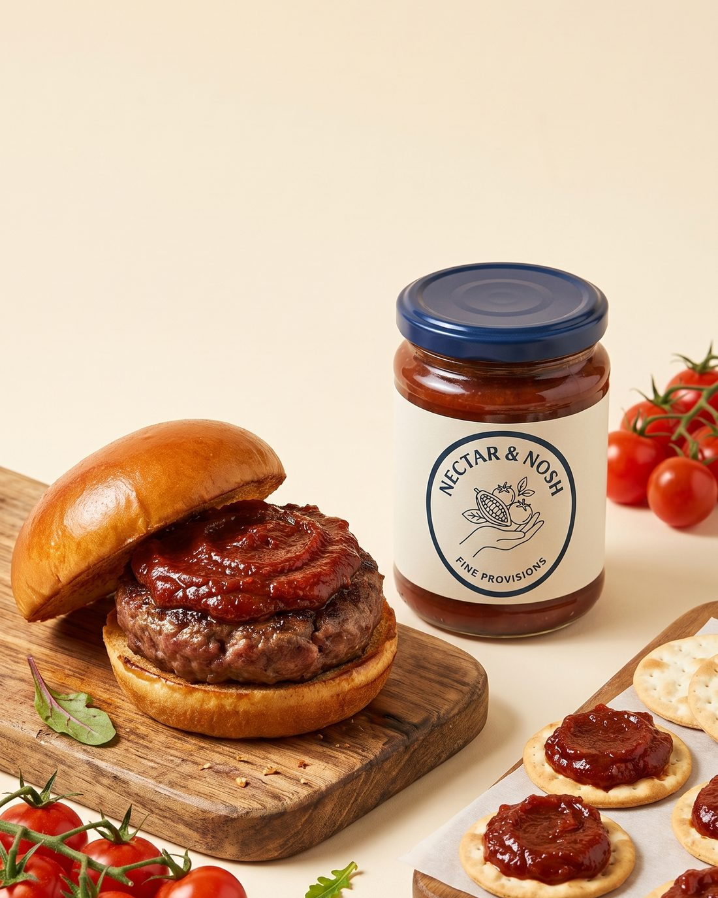
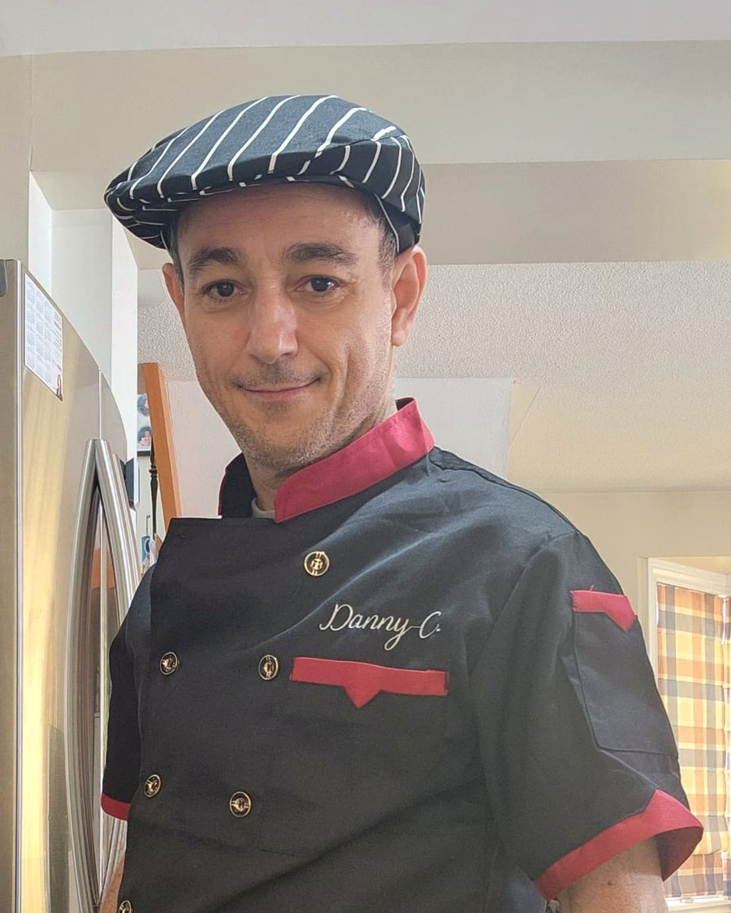

Our Story
It began with a single, unforgettable bite.
At a twilight cocktail party, a beautifully crafted burger slider was served with an unexpected star: tomato jam. Already deep in the world of from-scratch sauces, we were completely captivated by this sweet and savory revelation.
Back home, the search for a high-quality tomato jam across the GTA came up empty. If we wanted a fresh, artisanal conserve, we would have to craft it ourselves.
So we studied, blended techniques and traditions, and simmered batch after batch until the balance was perfect. Nectar & Nosh was born from a simple desire: to make this incredible flavor accessible to everyone. Whether it elevates a backyard burger or completes a rustic cheese board, this is the missing ingredient your pantry has been waiting for.

The Maker
Meet the man behind the brand.

After 30+ years building software teams, I've decided to follow my heart and turn a long-time passion into something I'm truly passionate about.
The kitchen is where I build with my hands. It's where I chase a detail, test it, throw it out, and start again until it's right. Nectar & Nosh came out of a hundred nights of exactly that — getting the snap right.
Everything here is small-batch and made by hand, in small enough quantities that I know every one of them. Nothing leaves my hands until I'd happily eat it myself. That's not a slogan; it's just the only standard I know how to work to.
— Danny C.
Say Hello
Talk to us.
Questions, ideas, a shelf that needs jam? We answer everything.